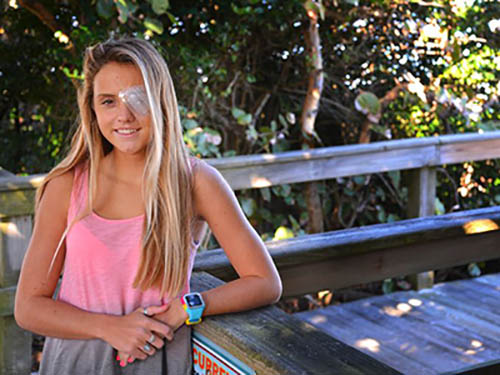
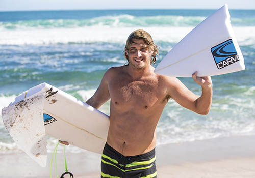
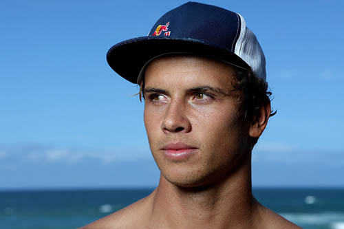
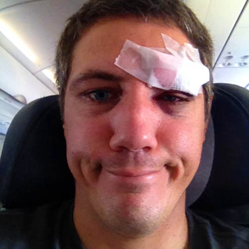

- 
Storm Portman
Age 14
Satellite Beach, Florida
Treading water amid 4 to 5 foot waves, Storm Portman prepared to hop back on her surfboard offshore from Pelican Beach Park. However, her surfboard leash got tangled around her foot, and the nose of the board was pointed toward her head. When she turned her body, the board shot forward — and rammed into her left eye. «It happened really fast. I covered my eye, but my eye wasn't really in the right place,» she recalled.
Portman, 14, the reigning Eastern Surfing Association girls champion, suffered a "globe rupture" of her eyeball in Jan. 15 accident.
- 
Clay Marzo
Age 20
New Zealand, Wellington
I've been surfing since I was 8 years old, last yaera I had a terrible accident, while doing a high air I had a harsh landing and the tip of my surfboard pierced my left cheek, fortunately no permanent damage was done, but if I would have had The Blunt as a surf tip protector I'm sure the accident would just have been a bruise.
- 
Julian Wilson
Age 22
San Clemente, CA
I've been surfing since I was 8 years old, last yaera I had a terrible accident, while doing a high air I had a harsh landing and the tip of my surfboard pierced my left cheek, fortunately no permanent damage was done, but if I would have had The Blunt as a surf tip protector I'm sure the accident would just have been a bruise.
- 
Manuel Roggero
Age 36
Peru, Lima
I've been surfing since I was 8 years old, last yaera I had a terrible accident, while doing a high air I had a harsh landing and the tip of my surfboard pierced my left cheek, fortunately no permanent damage was done, but if I would have had The Blunt as a surf tip protector I'm sure the accident would just have been a bruise.